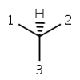
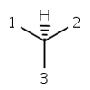

|
 |
|
parity ODD |
parity EVEN |
In case of tetrahedral parity the ligands around the stereocenter are numbered with 1, 2, 3, and 4 in the order of increasing atom index (position in the atom block). Hydrogen atom (if any) is considered to be the highest indexed atom (atom 4 regardless of its position in the atom block). The center is viewed from a position such that the bond connecting the highest-numbered atom (atom 4) projects behind the plane formed by atoms 1, 2, and 3. Viewing through the plane (1 2 3) towards atom number 4, the three remaining atoms can be arranged in either a clockwise or counterclockwise direction in ascending numerical order. If the atoms arranged in clockwise direction then the parity value is ODD otherwise, if they are arranged in counterclockwise direction then EVEN parity value is assigned. This is the parity definition also used by MDL.
|
 |
|
parity ODD |
parity EVEN |
An atom belongs to the tetrahedral parity class if:
|
|
|
The possible values for the tetrahedral parity class:
0 |
For atoms which cannot have tetrahedral parity. |
ODD |
For atoms which have ODD parity. |
EVEN |
For atoms which have EVEN parity. |
PARITY_EITHER |
For atoms which can have parity but it is unspecified. |
Note, it is not possible to change parity value from 0 to PARITY_EITHER and vice versa without changing atoms in the molecule.
Square-planar, trigonal-bipyramidal, and octahedral parity classes are not yet supported.
If the atomic coordinates are zero then the molecule's spatial dimension is zero. The parity information is stored in the atom flag of the stereocenter.
The parity information of a single atom can be modified using
the setParity(int i, int p) method of
MoleculeGraph class.
For setting parities of all atoms in the molecule, the
setParity (int[] p) method of MoleculeGraph
class can be used.
It is important to mention that, this method is faster than setting
parities with setParity(int i, int p) one by one.
Code example: setting parity of one atom:
// setting the first atom parity to ODD
boolean success = molecule.setParity(1, StereoConstants.PARITY_ODD);
System.out.println("Setting parity to atom 1 was "+ ((!success) ? "not" : "") + " successful");
Code example: setting parity for all atoms:
int ODD = StereoConstants.PARITY_ODD;
int EVEN = StereoConstants.PARITY_EVEN;
// we have a molecule with 7 atoms
int[] parities = new int[]{0, ODD, 0, 0, EVEN, 0, 0};
// setting parities
boolean success = molecule.setParity(parities);
System.out.println("Setting parities for the whole molecule was "+
((!success) ? "not" : "")+ " successful");
The parity information of a 0 dimensional molecule is stored in the
atom flags. It can be retrieved with the getFlags() function
of the MolAtom class or with the
getParity(int i) method of the
MoleculeGraph class.
Code example using getFlags method:
MolAtom a = molecule.getAtom(1); int f = a.getFlags(); // mask flags int p = f & StereoConstants.PARITY_MASK;
Code example using getParity method:
int p = molecule.getParity(1);
If the molecule is not 0 dimensional, then the parity information of the stereocenter is calculated from the spatial arrangement of the ligands. In case of 3 dimensions only the atomic coordinates are used. In case of 2 dimensions beside the atomic coordinates the out of plane information stored in the bond flags – known as wedges – are used.
The parity information in 2 dimensions can be modified by
setting wedge to the chiral center.
PARITY_EITHER can be achieved for a chiral center with wiggly bond or equally,
with removing all
wedge from the center.
There are two methods to define parity in 2 dimensions:
a single atom can be modified using the setParity(int i, int p)
method, while parities of all atoms in the molecule can be modified by the
setParity(int[] p) method of MoleculeGraph class.
The only possibility to change parity information of a 3 dimensional molecule is to change the atomic coordinates. However, it is not recommended to translate one atom as it may lead to unexpected bond length or collision of atoms. To overcome this problem one can convert the 3 dimensional molecule to 0 dimensional, change the parity information and finally clean the result to 3 dimensions. Please note that all parity values should be set to 0, CIS or TRANS, it is not possible to set PARITY_EITHER in case of 3D molecules.
Code example:
molecule.setDim(0); molecule.setParity(1, StereoConstants.PARITY_EVEN); Cleaner.clean(molecule, 3, null);
In case of 2 dimensions the parity information is calculated from the
coordinates and from the wedges connected to the stereocenter.
In case of 3 dimensions only the coordinates are used, any wedge
information is neglected.
To calculate the parity of an atom in 2 or 3 dimensions the
getParity(int i) method of the MoleculeGraph
class can be used.
Code example using getParity method:
int p = molecule.getParity(1);
|
Stereoisomers around double bond |
Chirality |